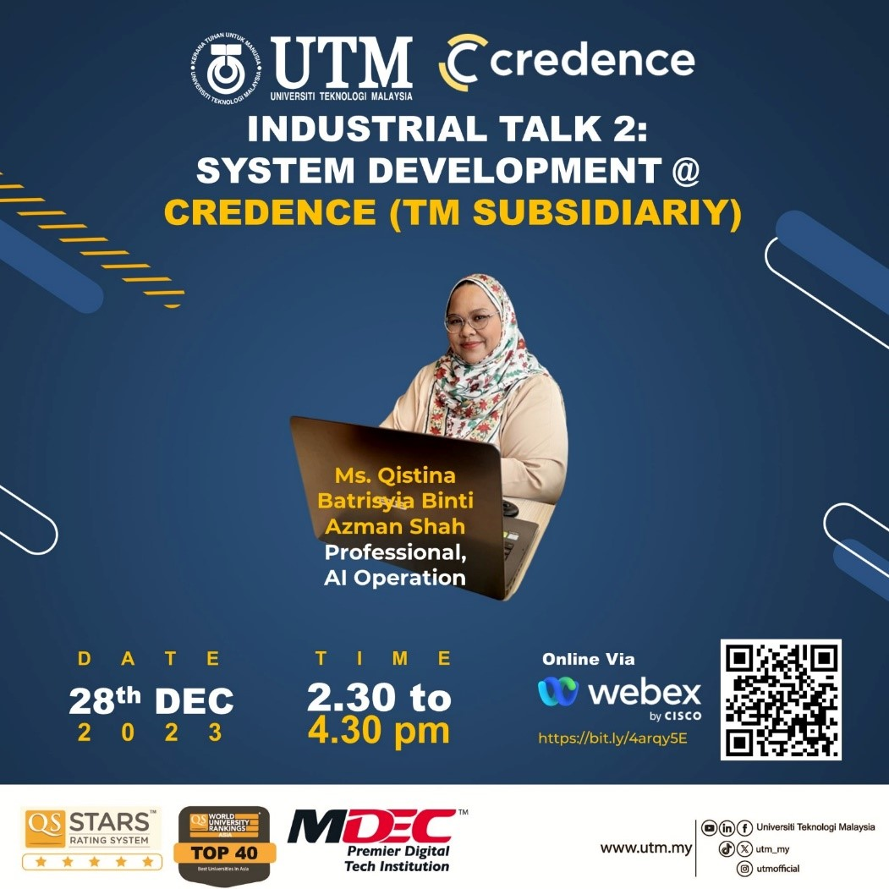

Assignment 3: Report on Industrial Talk 2
Composed a report that included the history, technology, and tool description of Credence's system development.

Report about Credence's System Development
Reflection
1. Summarization on what I have gained.
I think this industrial talk from Ms. Qistina had give me an opportunity to know more about system development particularly in Credence. I get to know the history, the technology and tools used in Credence's system development. I also recognized the significance of improving soft skills through active participation in workshops and networking. After the session, I realized the dual focus on technical expertise and interpersonal abilities will guide my growth in the field of system development.
2. Suggestion from me.
For this Industrial Talk session, I suggest that it will be done in physical platform so the students can have direct conversation with the industry. Although Ms. Qistina had cooperate well to answer all the questions from the students, I think it will be better for this session to be done in a physical manner because some questions need to be discuss properly.
3. Others.
In addition, this industrial talk session had motivate me to look forward to catch up and contribute to this exciting upcoming journey to become a successful individual in the computer science field.
Assignment 4: Newsletter on Industrial Talk 3
We summarised the session and listed the technologies and issues mentioned during the talk to create a newsletter on Tech-Driven Innovation.

Newsletter on Tech-Driven Innovation @ Technobizz
Reflection
1. Summarization on what I have gained.
I think this industrial talk from Dr Seah Choon Sen about I-Farm really impressed me and showed me how the computer science technology can be implemented to facilitate humans' life. I gain knowledge on how to correctly plan out a process from the beginning to the end, starting with the problem statements and finishing with specific information like the structure of the costs. This is an appropriate method to complete a job, so no details are left out that can cause any issues. I also recognized the I-Farm intiative as a commendable effort addressing real-world challenges in agriculture by efficiently integrating technology.
2. Suggestion from me.
For this Industrial Talk session, I suggest that it will be done in physical platform so the students can have direct conversation with the industry. Plus, this session started a bit late from the actual time because some problems occured. This showed that online session had deficiency in term of time.
3. Others.
Just to add, I amazed with the innovation invented by them. One notable achievement is their success in minimizing food-wastage through a demand-driven approach, ensuring production aligns with the market needs, at once helping to reduce environmental pollution.